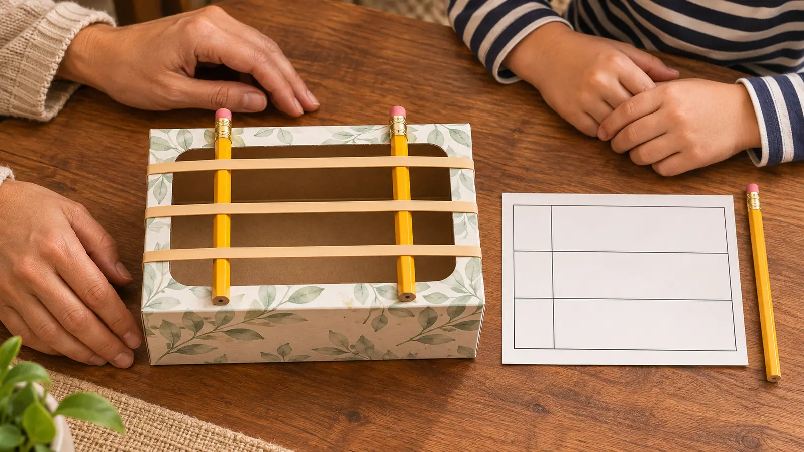

0–4 · adult setup
Inspect the box and bands. Remove the plastic opening liner. Loop bands around the box at low tension, then slide two unsharpened pencils beneath them on opposite sides of the opening.
AT HOME · NO-SPEND · EXPLORATION
This is not a concert and it is not a launcher. Build one quiet box instrument, change one variable, make three observations, and stop before the rubber bands become ammunition.

You need an empty rectangular tissue box with its plastic opening liner removed, three wide rubber bands that can loop around it without extreme stretch, two unsharpened pencils, paper and one writing pencil. That is enough. The point is to notice that a vibrating band produces sound and to test one change at a time—not to build the loudest instrument in the house.
Science Buddies’ rubber-band guitar activity explains that plucking makes a band vibrate, moving nearby air and producing a sound wave. It also notes that thickness, tension and the vibrating length affect pitch. In a family activity, do not change all three and then pretend to know which one caused the result.
If the box crushes, the bands need heavy force, or the pencils roll unpredictably, stop. A shallow plastic food container may be used only when an adult confirms it has smooth edges and the bands stay at low tension. Do not use glass, cans, sharp holes or a container that held hazardous material.
Touching a plucked band gently can stop its vibration and sound. That is a useful first observation. It is also the cue to keep the motion small; visible vibration does not require a dramatic snap.
Use the same band and the same adult plucker. Put the pencils far apart for the long run, closer for medium and closer again for short. Keep both pencils stable and the band at safe tension. The exact pitch may vary with band, box and technique. The expected general pattern is that shortening the vibrating section tends to raise pitch, but the family should write the observation actually heard.
| Run | Pencil spacing | Prediction | What we heard | Confidence |
|---|---|---|---|---|
| 1 | Long | Higher / lower / same | _____ | Sure / unsure |
| 2 | Medium | Higher / lower / same | _____ | Sure / unsure |
| 3 | Short | Higher / lower / same | _____ | Sure / unsure |
Do not use a phone frequency app as fake precision. Room noise, plucking force, microphone processing and overlapping vibrations can confuse a casual reading. Ears plus an honest “unsure” are enough for a 20-minute family lab.
This version is aimed at school-age kids who can keep bands on the box and follow a no-aiming rule. The adult owns band inspection, setup, position changes and final removal. A younger sibling can point to long, medium or short from a safe seat while the adult plucks. An older child can propose how to keep plucking more consistent and write a limitation.
Do not assign a child to hold the box against the body. Keep the work on a stable table. Keep bands away from infants, toddlers, pets and anyone likely to mouth, chew or launch them. Account for all three bands at cleanup.
One gentle pluck is enough. Stop for ear pain, distress or a child covering their ears. This activity does not justify loud amplification or holding the box near an ear. For a quieter version, watch the band move and touch it to stop without comparing pitch. The family can describe motion as fast-looking, slow-looking or hard to judge.
Natural rubber latex can trigger allergic reactions in some people. Packaging and material information control; appearance does not identify latex. If allergy status is known or uncertain, choose a verified non-latex alternative or skip the activity. This article is not medical advice.
Five-minute version: use one inspected band, one safe box and one adult pluck. Watch, touch to stop, clean up. No tissue box: stretch nothing around furniture, fingers, faces, electronics or a drinking glass. Instead, lightly tap three safe household objects with a fingertip and describe differences without claiming the same physics test.
Sibling conflict: one adult plucker, one child recorder and one child spacer-picker; swap once. Kid meltdown: write “stopped before run two,” remove the bands and call that an honest lab. Weather: irrelevant—that is the point. Use this when the outside plan is bad, not as punishment for missing it.
If the first session works, a later session can compare band thickness while keeping the same vibrating length and setup. That is a different experiment. Do not stack thickness, tension, box size and pencil spacing into one noisy session. Use the paper bridge lab when the child wants structure and load instead of sound, or the foil boat lab when water cleanup is acceptable.
For a no-build listening activity, use the 20-minute sound map. For a more theatrical sound session, the family Foley lab solves a different problem: matching safe household sounds to a story rather than measuring one changing variable.
Remove bands one at a time under adult control, moving them away from faces. Return pencils, recycle or store the box, and put reusable bands in a closed adult-controlled container. Do not leave the assembled instrument where tension, heat, sunlight, pets or younger children can weaken or misuse it. The reset is part of the activity, not cleanup somebody else inherits.
Skip when latex allergy is possible without a verified alternative, a participant cannot follow the no-launch rule, bands are old or damaged, the box requires high tension, the sound is distressing, younger children or pets cannot be separated, or the adult cannot supervise setup through cleanup. Use the three-object mini museum for a quiet no-tension option.
Reviewed November 5, 2026 using Science Buddies’ educator-authored rubber-band guitar activity and sound explanation and the Exploratorium’s Ear Guitar vibration explanation. The low-tension setup, adult-only control, three-run table, no-launch rule, 20-minute schedule and allergy/sensory gates are independent editorial adaptations—not medical advice, a science-fair protocol or proof about every material. No affiliate links are attached.
MAKE THE WEEK COUNT
Build the plan your family can finish well, then leave enough energy for the next part of the day.
More family plans